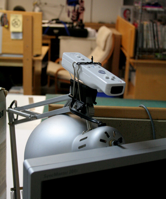
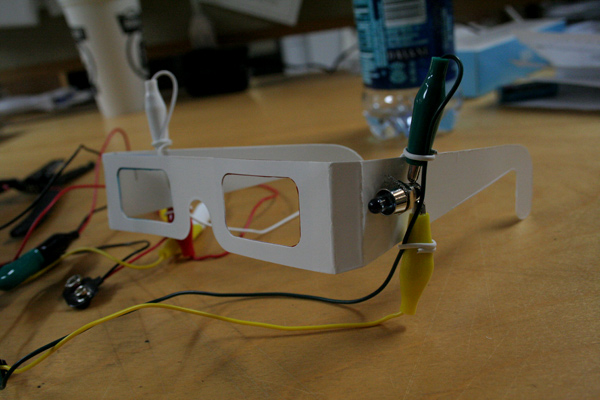
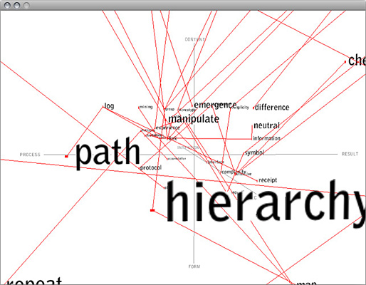
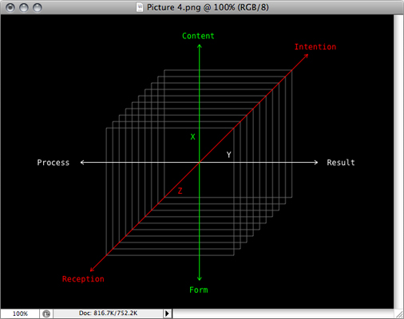

50 Words in 3D (alpha) a.k.a. Thesis Helmet
Second iteration of the 50 Words in Relation, initiated by a questionnaire given from Paul Elliman.
Exploration was started with the idea of putting 50 keywords in a three-dimensional field by each of their relation to my mind. Later development was aimed to establish a navigational system of a virtual brain, inspired by Johnny Lee’s Wii Remote Projects.
–
Processing with WiiRemote, Infrared LEDs and Constrction Helmet
800 x 600 pixels
Yale School of Art, Spring 2008




Earlier project:
Undergraduate Senior Project Exhibition 2008
Later project:
Oh Yes ’09: Second Year MFA Students’ Exhibition